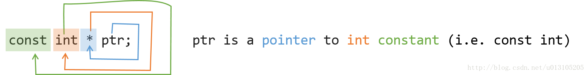
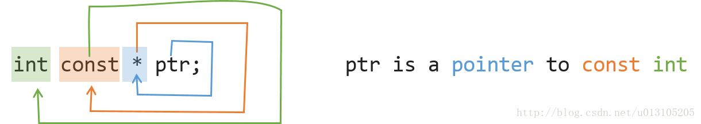

Const
作用
- 修饰变量，说明该变量不可被改变；
- 修饰指针，分为指向常量的指针和指针常量；
- 常量引用，经常用于形参类型，既避免了拷贝，又避免了函数对值的修改；
- 修饰成员函数，说明该成员函数内不能修改成员变量。
使用
1 | class A{ |
判断方法
从右往左读



static
作用
- 修饰普通变量，修改变量的存储区域和生命周期，使变量存储在静态区，在main函数运行前就分配了空间，如果有初始值就用初始值初始化它，如果没有初始值系统用默认值初始化它。
- 修饰普通函数，表明函数的作用范围，仅在定义该函数的文件内才能使用。在多人开发项目时，为了防止与他人命名空间里的函数重名，可以将函数定位为static。
- 修饰成员变量，修饰成员变量使所有的对象只保存一个该变量，而且不需要生成对象就可以访问该成员。
- 修饰成员函数，修饰成员函数使得不需要生成对象就可以访问该函数，但是在static函数内不能访问非静态成员。
this 指针
- this 指针是一个隐含于每一个非静态成员函数中的特殊指针。它指向调用该成员函数的那个对象。
- 当对一个对象调用成员函数时，编译程序先将对象的地址赋给 this 指针，然后调用成员函数，每次成员函数存取数据成员时，都隐式使用 this 指针。
- 当一个成员函数被调用时，自动向它传递一个隐含的参数，该参数是一个指向这个成员函数所在的对象的指针。
- this 指针被隐含地声明为: ClassName const this，这意味着不能给 this 指针赋值；在 ClassName 类的 const 成员函数中，this 指针的类型为：const ClassName const，这说明不能对 this 指针所指向的这种对象是不可修改的（即不能对这种对象的数据成员进行赋值操作）；
- this 并不是一个常规变量，而是个右值，所以不能取得 this 的地址（不能 &this）。
- 在以下场景中，经常需要显式引用 this 指针：
- 为实现对象的链式引用；
- 为避免对同一对象进行赋值操作；
- 在实现一些数据结构时，如 list。
#
虚函数、虚函数表、虚函数指针
虚继承
STL基本操作
vector, 变长数组，倍增的思想
- size() 返回元素个数
- empty() 返回是否为空
- clear() 清空
- front()/back()
- push_back()/pop_back()
- begin()/end()
- []
- 支持比较运算，按字典序
pair<int, int>
- first, 第一个元素
- second, 第二个元素
- 支持比较运算，以first为第一关键字，以second为第二关键字（字典序）
string，字符串
- size()/length() 返回字符串长度
- empty()
- clear()
- substr(起始下标，(子串长度)) 返回子串
- c_str() 返回字符串所在字符数组的起始地址
queue, 队列
- size()
- empty()
- push() 向队尾插入一个元素
- front() 返回队头元素
- back() 返回队尾元素
- pop() 弹出队头元素
priority_queue, 优先队列，默认是大根堆
- push() 插入一个元素
- top() 返回堆顶元素
- pop() 弹出堆顶元素
- 定义成小根堆的方式：priority_queue<int, vector
, greater > q;
stack, 栈
- size()
- empty()
- push() 向栈顶插入一个元素
- top() 返回栈顶元素
- pop() 弹出栈顶元素
deque, 双端队列
- size()
- empty()
- clear()
- front()/back()
- push_back()/pop_back()
- push_front()/pop_front()
- begin()/end()
- []
set, map, multiset, multimap, 基于平衡二叉树（红黑树），动态维护有序序列
- size()
- empty()
- clear()
- begin()/end()
- ++, – 返回前驱和后继，时间复杂度 O(logn)
set/multiset
- insert() 插入一个数
- find() 查找一个数
- count() 返回某一个数的个数
- erase()
- 输入是一个数x，删除所有x O(k + logn)
- 输入一个迭代器，删除这个迭代器
- lower_bound()/upper_bound()
- lower_bound(x) 返回大于等于x的最小的数的迭代器
- upper_bound(x) 返回大于x的最小的数的迭代器
map/multimap
- insert() 插入的数是一个pair
- erase() 输入的参数是pair或者迭代器
- find()
- [] 注意multimap不支持此操作。 时间复杂度是 O(logn)
- lower_bound()/upper_bound()
unordered_set, unordered_map, unordered_multiset, unordered_multimap, 哈希表
- 和上面类似，增删改查的时间复杂度是 O(1)
- 不支持 lower_bound()/upper_bound()， 迭代器的++，–
bitset, 圧位
- bitset<10000> s;
- ~, &, |, ^
, <<
- ==, !=
[]
count() 返回有多少个1
any() 判断是否至少有一个1
none() 判断是否全为0
set() 把所有位置成1
- set(k, v) 将第k位变成v
- reset() 把所有位变成0
- flip() 等价于~
- flip(k) 把第k位取反